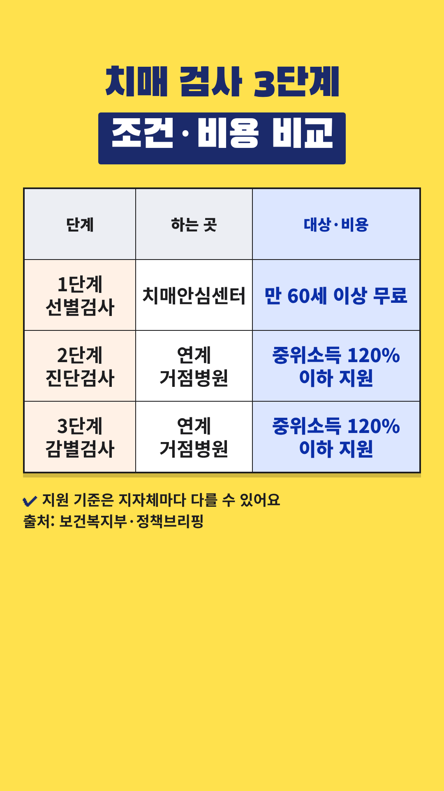

Vrew 작업 카드
2026-11-05-치매-무료선별검사 · 사실 검증과 업로드 전 점검을 통과한 회차입니다. 위에서부터 차례로 복사해 붙여넣으세요.
- 대본 붙여넣기 → AI 목소리(차분한 중년, 0.9~1.0배)
- 장면마다 AI 이미지 문구 복사 → 이미지 바꾸기
- 큰 글자가 있는 장면에 텍스트 추가
- 배경음악(오디오 보관함·Vrew 음원) → 내보내기 mp4
- 제목·설명란·고정댓글 복사해 업로드
0단계 · 첫 장면 강조 제목
Vrew 1번 장면 → 삽입 → 이미지 → 같은 폴더의 title-overlay.png(투명 배경) → 화면 전체 크기로 맨 위에 얹기. 1번 장면의 '큰 글자'는 이 이미지가 대신하므로 따로 넣지 않습니다. 아래 배경은 AI 이미지 자리 표시입니다.
0-1단계 · 숫자 카드 (표 이미지)

표시된 장면들을 하나로 이어 붙이거나 장면마다 → 이미지 바꾸기 → 같은 폴더의 number-N.png를 화면 전체 크기로 넣습니다. 이 장면들에는 AI 이미지와 큰 글자를 넣지 않습니다. 자막은 화면 맨 아래에 두어 표를 가리지 않게 합니다.
1단계 · 대본
1. 대본 붙여넣기
Vrew → 새로 만들기 → 텍스트로 비디오 만들기 → 쇼츠 9:16 → 대본 칸에 붙여넣기
만 60세 이상이면 치매 선별검사가 무료예요. 소득과 상관없이 받을 수 있어요. 검사는 3단계로 이뤄져요. 1단계는 치매안심센터의 선별검사예요. 1단계에서 인지 저하가 나오면 2단계 진단검사로 이어져요. 3단계는 감별검사예요. 2·3단계는 비용이 생길 수 있어요. 만 60세 이상, 중위소득 120% 이하면 검사비를 지원받을 수 있어요. 지원 기준은 지자체마다 달라요. 정리하면 1단계는 무료, 2·3단계는 조건 확인이에요. 가까운 센터에 먼저 문의해 보세요. 선별검사는 진단이 아니니 전문가와 상담하세요.
2~3단계 · 장면별 이미지와 큰 글자
장면 1
나레이션만 60세 이상이면 치매 선별검사가 무료예요.
AI 이미지동네 보건소 건물 앞에서 서로 팔짱을 끼고 선 60대 한국인 부부, 위쪽은 맑은 하늘, 따뜻한 자연광, 사실적인 사진 스타일, 세로 9:16 구도, 화면에 글자 없음
큰 글자치매 선별검사
무료로 받는 법
장면 2
나레이션소득과 상관없이 받을 수 있어요.
AI 이미지상담 창구에서 직원과 이야기하는 60대 한국인 여성, 따뜻한 자연광, 사실적인 사진 스타일, 세로 9:16 구도, 화면에 글자 없음
장면 3
나레이션검사는 3단계로 이뤄져요.
숫자 카드number-1.png를 화면 전체로 (AI 이미지·큰 글자 대신)
장면 4
나레이션1단계는 치매안심센터의 선별검사예요.
숫자 카드number-1.png를 화면 전체로 (AI 이미지·큰 글자 대신)
장면 5
나레이션1단계에서 인지 저하가 나오면
숫자 카드number-1.png를 화면 전체로 (AI 이미지·큰 글자 대신)
장면 6
나레이션2단계 진단검사로 이어져요.
숫자 카드number-1.png를 화면 전체로 (AI 이미지·큰 글자 대신)
장면 7
나레이션3단계는 감별검사예요.
숫자 카드number-1.png를 화면 전체로 (AI 이미지·큰 글자 대신)
장면 8
나레이션2·3단계는 비용이 생길 수 있어요.
숫자 카드number-1.png를 화면 전체로 (AI 이미지·큰 글자 대신)
장면 9
나레이션만 60세 이상, 중위소득 120% 이하면
숫자 카드number-1.png를 화면 전체로 (AI 이미지·큰 글자 대신)
장면 10
나레이션검사비를 지원받을 수 있어요.
숫자 카드number-1.png를 화면 전체로 (AI 이미지·큰 글자 대신)
장면 11
나레이션지원 기준은 지자체마다 달라요.
숫자 카드number-1.png를 화면 전체로 (AI 이미지·큰 글자 대신)
장면 12
나레이션정리하면 1단계는 무료,
숫자 카드number-1.png를 화면 전체로 (AI 이미지·큰 글자 대신)
장면 13
나레이션2·3단계는 조건 확인이에요.
숫자 카드number-1.png를 화면 전체로 (AI 이미지·큰 글자 대신)
장면 14
나레이션가까운 센터에 먼저 문의해 보세요.
AI 이미지전화기를 들고 상담하는 60대 한국인 남성, 밝은 거실, 따뜻한 자연광, 사실적인 사진 스타일, 세로 9:16 구도, 화면에 글자 없음
장면 15
나레이션선별검사는 진단이 아니니 전문가와 상담하세요.
AI 이미지진료실에서 의사와 상담하는 60대 한국인 부부, 따뜻한 자연광, 사실적인 사진 스타일, 세로 9:16 구도, 화면에 글자 없음
5단계 · 업로드 정보
제목
치매 검사 3단계, 어디까지 무료일까요?
설명란
[음원] 칸은 고른 배경음악으로 채운 뒤 올리세요.
치매안심센터에서는 만 60세 이상이면 소득과 관계없이 치매 선별검사를 무료로 받을 수 있어요. 검사는 선별검사 → 진단검사 → 감별검사 3단계로 이뤄지고, 선별검사에서 인지 저하가 나온 분이 다음 단계로 이어져요. 2·3단계는 비용이 생길 수 있고, 만 60세 이상·중위소득 120% 이하면 검사비 지원이 있어요. 지원 기준은 지자체마다 다를 수 있으니 가까운 치매안심센터에 문의해 보세요. [출처] - 보건복지부 치매조기검진사업 (최종수정 2024-07-18): https://www.mohw.go.kr/menu.es?mid=a10712010100 - 정책브리핑 치매안심센터서 직접 치매 검사 받아보니 (2019-05-20): https://www.korea.kr/news/policyNewsView.do?newsId=148860790 - 정책브리핑 치매 진단검사 비용지원, 15만원까지 확대 (2019-07-01): https://www.korea.kr/news/policyNewsView.do?newsId=148862173 - 정책브리핑 치매 극복, 국가와 함께해요! (2022-09-21): https://www.korea.kr/news/policyNewsView.do?newsId=148905927 [꼭 직접 확인해 주세요] 운영 방식과 지원 기준은 지자체마다 다를 수 있어요. 가까운 치매안심센터 또는 보건복지상담센터 129에서 확인하세요. [음원] [Vrew 작업 후 vrew.md 음원 기록란에서 채우기] [안내] 이 영상은 공공기관 자료를 바탕으로 한 일반 정보이며 의학적 진단이나 치료를 대신하지 않습니다. 선별검사는 진단이 아니며, 검사 결과와 건강 상태는 전문의 등 전문가와 상담하세요. #쇼츠 #치매검사 #치매안심센터 #무료검진 #5060 #치매선별검사 #치매 #검사비지원 #부모님건강 #노후건강 #건강정보 #시니어 #중장년 #50대 #60대
고정댓글
가까운 치매안심센터를 이용해 보신 적 있나요? 궁금한 점이나 경험을 댓글로 나눠 주세요. 지원 기준은 지역마다 다를 수 있어 센터에 문의하시는 게 가장 정확해요.
업로드 추천 시간: 오전 7시